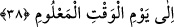

İbn Abbas (r.anhümâ)’dan rivâyet edildiğine göre İblis çok uzun müddet yaşayıp iyice
yaşlanınca tekrar otuz yaşına döner.
Anlatıldığına göre Allah Teâlâ Hızır (a.s.)’ın bedenini her yüz yirmi senede bir
yeniler. Tekrar genç hâle gelir. O da ‘ertelenenler’den biridir. Nitekim sahih haberlerde
bu şekilde geçmektedir.
Şeytanın Allah Teâlâ ile karşılıklı konuşması her ne kadar bir vâsıta ile olmasa da
İblis’in yüksek bir mevkie sâhip olduğuna delâlet etmez. Çünkü Allah’ın onu muhâtap
alması horlama ve zelil etme yollu bir muhâtap alıştır. Nitekim tefsirlerde böyle
denilmektedir.
Âlimlerden birisi der ki: “Sahih olan şudur: Allah’ın İblis’le şifâhen, yâni yüz yüze
konuşmuş olması câiz değildir. Çünkü Hak Teâlâ’nın biriyle konuşması, konuştuğu
varlık için bir rahmet, razı olma, değer verme ve yüceltme mânâsı taşır. Görmez misin
ki Mûsâ (a.s.), Halil İbrâhim ve Muhammed (a.s.) hâriç diğer tüm peygamberlerden sırf
bu sebeple üstün kılınmıştır. Mezkûr konuşma ile ilgili olarak vârid olan tüm âyetler,
Cenâb-ı Hakk’ın İblis’e bir melek gönderdiği ve meleğin konuştuğu şeklinde
yorumlanır.
“Peki ona birini göndermiş olması da ona şeref verme anlamına gelmez mi?” diyecek
olursan buna şöyle cevap verilebilir: Sırf birini göndermek, şeref bahşetmek anlamına
gelmez. Bu sâdece ortaya bir delil koymak içindir. Bunu Mûsâ (a.s.)’ın Fir’avn ve
Hâmân’a gönderilirken onlara değer ve şeref verme kasdı bulunmamasından
çıkarıyoruz. Nitekim Akâmü’l-mercân’ da böyle geçmektedir.
38. “Allah katında bilinen vaktin gününe kadar...”
“Allah katında bilinen” yâni, Allah katında belirlenmiş, ne ileri gelecek ne de geri
kalacak olan “vaktin gününe kadar...” Bu gün sûr’a ilk defa üfürüldüğünde bütün
yaratılmışların öldüğü gündür. Bu günden sonra ikinci defa üfürülene dek kırk sene
Allah Teâlâ dışında canlı bir varlık kalmaz.
Bütün taht ve saltanatlar bulur zevâl
Ferman buyuran ebedî Pâdişah’dan gayrı
Kâşifî der ki: “Yâni, mahlûkatın fânî olması zamanı sûr’a birinci defa üfürülmesidir.
Ona “nefha-i sâika (bayılma üfürülmesi)” derler. Cumhûrun görüşü odur ki sûr’a birinci
defa üfürülmesi, ölüm üfürülmesi olur. İkinci defa üfürülmesi mahlûkâtın diriltilmesi
üfürülmesidir. En meşhûr görüşe göre bu iki üfürülme arası kırk yıl olsa gerektir.
Böylece İblis de kırk yıl ölmüş olur. Bundan sonra da haşr edilir.
es-Sîretü’l-Halebiyye’de der ki: “İnsanları çarpacak ve baygınlığa sebebiyet verecek